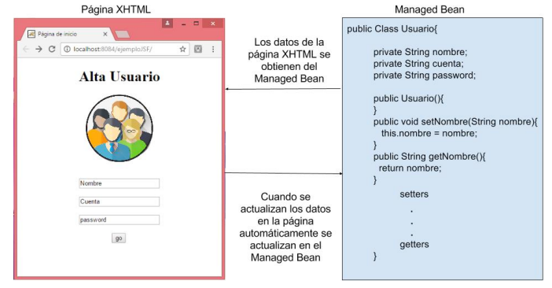
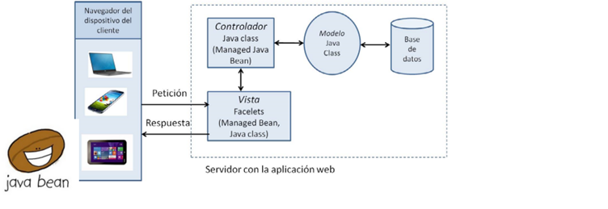
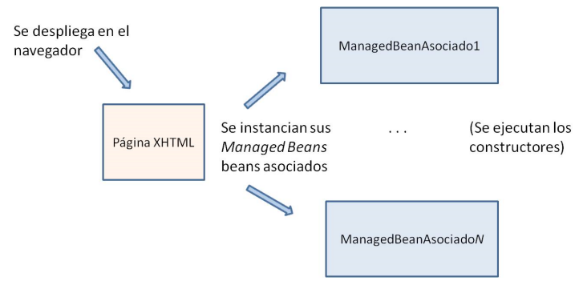
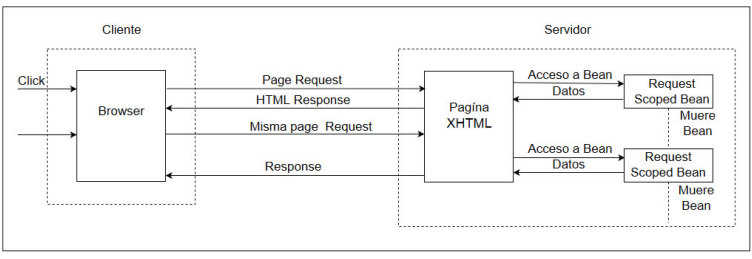
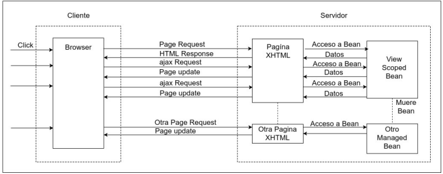
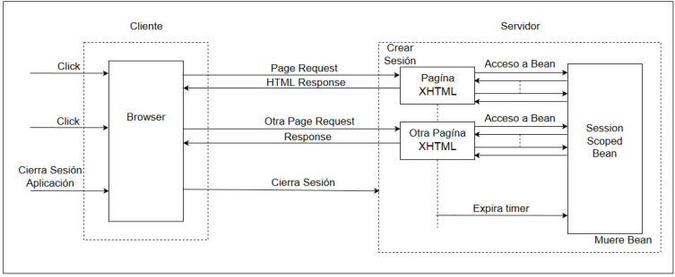

Los principios de JavaServer Faces [1]
Objetivos
-
Conocer en qué consiste el Framework “JavaServer Faces” y los servicios que éste proporciona y principales componentes.
-
Saber en que consisten los JavaBeans administrados y entender su alcance.
-
Entender cómo se comunican las vistas con la lógica de la aplicación.
-
Saber navegar desde una página Web hacia un Bean y desde una clase Java hacia una página Web.
-
Conocer los elementos básicos de la interfaz de usuario en JSF.
Introducción a JavaServer Faces
JavaServer Faces (JSF) es otro entorno de desarrollo de aplicaciones Web en Java, diferente al de los Servlets que hemos visto hasta ahora. Esta tecnología está diseñada para simplificar el desarrollo Web con Java, y fomenta la separación de la presentación de las interfaces de usuario con la lógica de la aplicación. JSF utilizaba JSPs, añadiendo librerías que contienen componentes de alto nivel (menús, paneles, campos de texto,…), cada uno de estos componentes puede interactuar con el servidor de forma independiente. En la actualidad, se utilizan “Facelets” que son páginas con extensión xhtml que sirven para lo mismo que las JSF pero son una forma más sencilla de trabajar. Como JavaServer Faces es un “framework” (marco de referencia), simplifica el diseño de la estructura de la aplicación y también proporciona librerías que hacen más facil el desarrollo de la aplicación
Con JavaServer Faces es posible utilizar Ajax (Asynchronous JavaScript and XML). Ajax es un enfoque en el que las diferentes acciones que solicita el usuario se realizan dentro de una misma página, de tal manera que el servidor no genera una nueva página sino sólo los datos. En las aplicaciones tradicionales, cada petición al servidor hace que éste genere una nueva página HTML/XHTML. Las aplicaciones RIA (Rich Internet Applications), como lo es JSF, intentan simular las aplicaciones de escritorio y, cuando usan Ajax, son más rápidas que las aplicaciones tradicionales.
La tecnología JavaServer Faces proporciona:
-
Un conjunto de componentes de Interfaz de Usuario predefinidos (botones, menús, campos de texto,…), listos para agregarse a una página Web. Estos componentes se representan como objetos con un estado.
-
Oyentes y manejadores de eventos (pulsación de un botón, cambio en el valor de un campo,…), los cuales permiten conectar fácilmente los eventos generados del lado del cliente con código de la aplicación en el servidor
-
Oyentes y manejadores de eventos (pulsación de un botón, cambio en el valor de un campo,…), los cuales permiten conectar fácilmente los eventos generados del lado del cliente con código de la aplicación en el servidor
JSF contiene dos importantes componentes de software: las Tag Libraries y los Managed Beans
Tag Libraries
Los Facelets son páginas .xhtml con librerías adicionales llamadas Tag libraries. Las librerías de etiquetas (tag libraries) son componentes especiales de software que encapsulan funcionalidad dinámica y compleja. Estas librerías las construyen especialistas en ciertos servicios, como, por ejemplo: el acceso a la base de datos, o el manejo de botones, menús, desplegado de listas, etc. La idea principal es que el diseñador de las vistas pueda incorporar poderoso contenido dinámico en sus páginas sin necesidad de saber cómo se codifican los detalles
JSTL (JavaServer pages Standard Tag Library) es una librería que contiene la funcionalidad más comun de las aplicaciones Web. Los diseñadores de páginas Web sólo deben saber cómo incluir los tags. JSF proporciona componentes para construir una aplicación con GUIs (Graphical User Interfaces: Interfaces de Usuario Gráficas). El desarrollador personaliza objetos como menús, check box, botones, etc. manipulando los atributos de los tags de cada uno de estos componentes.
Cuando creamos un proyecto en JavaServer Faces en NetBeans, se generan XHTML, las cual se llaman facelets, y ya tienen incluidas las Tag libraries.
JavaBeans Administrados (managed Beans)
Un Bean administrado (Managed Bean) es un JavaBean que puede ser accedido desde una página Web. El managed Bean se inventó para que el usuario remoto pueda comunicarse con un programa en Java que está en el servidor. A diferencia de los JavaBeans, los managed Beans no están obligados a implementar la interfaz serializable
También existen los Beans CDI (Context and Dependency Injection). Los CDI poseen un modelo un poco más avanzado para administrar los Beans, sin embargo, aún no se ha demostrado su ventaja sobre los Managed Beans, por lo tanto, en este curso, trabajaremos con los Managed Beans.
En la Figura se muestra la conexión de una página wWeb con su managed Bean asociado. JavaServer Faces usa el mecanismo de los managed Beans para establecer la conexión entre los datos que se despliegan al usuario y lo que está registrado en el código Java.
El Model-View-Controller (MVC) con JavaServer Faces
La forma de modelar la arquitectura Model-View-Controller con JSF se puede apreciar en la Figura que se muestra, y es la siguiente:
-
Vistas.-Se implementan con páginas .xhtml a las que se les llama facelets. Los Managed Beans también pueden usarse como parte de la vista. Incluso, si una clase Java organiza las páginas Web y sus correspondientes Managed Beans (de la vista) entonces la clase Java también es parte de la vista.
-
Controladores.-Los controladores se pueden implementar con los JavaBeans administrados (managed JavaBeans) o con clases Java. Recordar que un controlador realiza las siguientes funciones: recepción/validación de peticiones, selección de la lógica a ejecutar y selección de la vista a en la que se presentará el resultado.
-
Modelo.-Las clases con la lógica de la aplicación se construyen con clases Java.
Las anotaciones Java y la tecnología XML
XML (Extensible Markup Language) es un lenguaje de marcado de texto, que permite definir etiquetas personalizadas que describen y organizan datos. Se dice que es un lenguaje de etiquetas, porque cada paquete de información está delimitado por dos etiquetas como se hace en HTML, con la diferencia de que las etiquetas XML describen el significado de la información que contiene cada etiqueta, mientras que las etiquetas HTML se ocupan de la presentación del contenido y no de su significado.
El siguiente es un ejemplo de XML. Al igual que en HTML, el fin de la etiqueta se indica con el caracter “/”. Nótese que las etiquetas se anidan para que el código sea más claro:
<session-config>
<session-timeout>
30
</session-timeout>
</session-config>
Con la etiqueta <session-config> sabemos que los datos que ésta encierra se refieren a la configuración de la sesión. Con la etiqueta anidada: </session-timeout> podemos intuir que el dato se refiere al tiempo que una sesión puede permanecer inactiva.
Los archivos escritos en este XML son archivos de texto con la extensión XML. Estos archivos . XML siempre están presentes en las aplicaciones Javaweb, ya que sirven para indicar su configuración. Como el XML es un archivo clave, se genera automáticamente cuando se crea un proyecto Web (en NetBeans, eclipse, etc…) y, aunque algunas dependencias se generan automáticamente, es necesario agregar las dependencias que no son autogeneradas en este archivo
Se les llama dependencias a todos aquellos elementos sw que el sistema requiere para funcionar (librerías Java, librerías JSF, conector a base de datos, etc.). Escribir directamente las dependencias en los archivos XML, da pié a que se cometan errores, ya que hay que escribir mucho código repetitivo. Las anotaciones en el contexto de las aplicaciones Web, surgieron como una forma de simplificar la codificación, reducir los errores y facilitar el mantenimiento de los sistemas Web.
Las anotaciones Java permiten indicar en el código fuente cómo debe comportarse el software. También sirven para añadir metadatos al código fuente. Los metadatos son “información acerca de la información”. Por eso se dice que con las anotaciones se asocia la meta-información
Una anotación contiene el caracter “@”, seguido de la instrucción correspondiente. En este curso, estudiaremos particularmente algunas de las anotaciones que se utilizan para el desarrollo de aplicaciones Web con JSF. Las anotaciones son una alternativa que simplifica en gran medida los archivos de configuración XML.
XHTML
El lenguaje XHTML (Extensible HyperText Markup Languaje) es otro lenguaje de marcado de texto que se caracteriza por la separación de la estructura de la información con la presentación de la página. XHTML se basa en HTML, pero utiliza un archivo adicional con extensión CSS (Cascading Style Sheets) para definir la presentación de la página. La presentación es la especificación del lugar en donde el navegador presenta cada elemento de la página Web, del font, y de los colores de cada uno de los elementos a desplegar.
Una de las características más importantes del XHTML es que tanto el texto como las imágenes pueden ser hipervínculos. Se pueden consultar varios manuales de XHTML en español en la Web. También recomendamos [Deitel P., Deitel H., Internet & World Wide Web, 2008] que tiene un capítulo dedicado a XHTML con ejemplos muy prácticos. Y otro capítulo dedicado a las hojas de estilo (CSS).
Características importantes de los JavaBeans Administrados
Hay dos maneras de declarar un JavaBean administrado, con anotaciones y con comandos especiales en un archivo faces-config.xml, en este curso trabajaremos con anotaciones
Anotaciones para establecer el ámbito de los Beans
Existen diferentes ámbitos en los que puede operar un Bean. Los ámbitos más representativos, de menor a mayor alcance, son: petición, vista, sesión y aplicación. Con la anotación de ámbito, se establece el alcance de los métodos y atributos de un Bean. Las anotaciones para los ámbitos más utilizados son las siguientes:
@RequestScoped.-Persiste sólo durante la petición (request) del usuario. Cuando se envía la respuesta correspondiente (response), se elimina la instancia del Bean. El constructor se ejecuta cada vez que la página se solicita.
@ViewScoped.-Es algo intermedio entre RequestScoped y SessionScoped. El Bean existirá mientras la vista está activa. El Bean permanece activo cuando una petición no requiere cambiar a otra vista, y desaparece cuando el usuario navega hacia otra página. Esto es útil cuando se trabaja con Ajax.
@SessionScoped.-El Bean está activo durante toda la sesión del usuario. En otras palabras, mientras la sesión exista, existe el Bean
@ApplicationScoped.-El Bean existe mientras la aplicación esté corriendo en el servidor
Declarando un Managed Bean con anotaciones
Para declarar un managed Bean con anotaciones es necesario poner antes del nombre de la clase, la anotación @ManagedBean. En seguida se pone una anotación para declarar el alcance del Bean, posteriormente se declara el nombre del Bean, con sus atributos privados y el constructor vacío. Cada atributo de un Bean debe tener su método getter y setter.
JavaServer Faces administra los managed Beans automáticamente, por eso deben cumplir con estas características mencionadas. Las tres acciones que JSF hace de manera automática con los managed Beans son:
-
Los instancia (por eso deben tener el constructor vacío).
-
Controla su ciclo de vida (por eso deben incluir una declaración de ámbito).
-
Llama a los métodos getters y setters (lo explicaremos en la siguiente sección).
Para declarar el managed Bean EjemploBean tenemos:
@ManagedBean
@RequestScoped
public class EjemploBean{
. . .
}
Cuando renombramos un Bean, se puede hacer referencia a él con otro nombre desde las páginas JSF, la sintaxis para renombrar es la siguiente:
@ManagedBean(name=”nombreBean”)
Por ejemplo:
@ManagedBean (name=”Ejemplito”)
@RequestScoped
public class EjemploBean{
. . .
}
Los tres objetos JavaBean en la aplicación Web
Toda aplicación Web hecha con JavaServer Faces tiene tres objetos que se instancian automáticamente:
-
1. RequestBean.- Es un objeto que persiste sólo durante la petición del usuario (@ RequestScoped).
-
2. SessionBean.- Es un objeto que existe durante toda la sesión del usuario. Sólo hay un sessionBean por cada usuario
-
. ApplicationBean.- Es un objeto que existe mientras la aplicación se esté ejecutando en el servidor. Este objeto lo comparten todas las instancias de la aplicación.
Comunicación de las vistas con la lógica de la aplicación
El lenguaje EL (Expression Languaje)
El JavaExpression Languaje (EL) es un mecanismo compacto y muy poderoso para establecer la comunicación entre las páginas Web y los JavaBeans. Con EL se pueden enviar los datos proporcionados por el usuario en una pagina Web a la lógica de la aplicación (en un HTTP request), y también se pueden mostrar al usuario los datos procesados (en un HTTP response). Las expresiones en lenguaje EL se codifican en las páginas JSP, JSF, facelets y en archivos XML. En este curso aprenderemos algunas de las instrucciones EL más utilizadas. Para una referencia completa de EL se puede consultar el documento de especificación de EL en:
http://download.oracle.com/otndocs/jcp/el-3_0-fr-eval-spec/index.html
Las expresiones de valor (value expressions) son probablemente las expresiones EL más utilizadas porque son las que se utilizan para hacer referencia a los métodos y los atributos de un objeto o de un managed Bean. EL proporciona un conjunto de objetos implícitos que sirven para obtener valores de parámetros y atributos de diferentes ámbitos. Con las value expressions se pueden acceder fácilmente los métodos y atributos de un JavaBean, las colecciones y los datos de tipo enum.
Existen dos tipos de value expressions:
-
rvalue.- Son aquellas que pueden leer los datos, pero no pueden sobreescribirlos. Se encierran entre llaves, precedidas por el carácter $, es decir, tienen la sintaxis: ${ }
-
lvalue.- Son las que pueden leer y escribir en los datos. Se encierran entre llaves, precedidas por el carácter #, es decir, tienen la sintaxis: #{ }
Así, para acceder al atributo de un Bean, se usa la notación punto:
#{nombreBean.atributoBean}
Y para acceder al método de un Bean, los paréntesis son obligatorios sólo cuando el método recibe parámetros:
#{nombreBean.metodoBean} // Cuando no tiene parámetros
#{nombreBean.metodoBean(…, …,…)} // Cuando tiene parámetros
Nótese que se utilizó letra minúscula en nombreBean, esto se debe a que JSF instancia automáticamente un objeto de la clase NombreBean, y cuando se desea acceder a un atributo del Bean con EL hay que usar el objeto, no la clase.
Ejemplo:
Si tenemos el managed Bean EjemploBean declarado de la siguiente forma:
@ManagedBean
@RequestScoped
public class EjemploBean{
private String atributo1;
private Integer atributo2;
public EjemploBean(){
}
public void setAtributo1(String atributo1){
this.atributo1 = atributo1;
}
public String getAtributo1(){
return atributo1;
}
public void setAtributo2(Integer atributo2){
this.atributo2 = atributo2;
}
public Integer getAtributo2(){
return atributo2;
}
// otros métodos del Bean
. . .
}
Entonces, usando EL podremos acceder a los atributos de la clase EjemploBean desde un facelet, con el objeto ejemploBean, de la siguiente manera:
#{ejemploBean.atributo1}, #{ejemploBean.atributo2}
Las propiedades de anidamiento en EL
Supongamos ahora que también tenemos el Bean Direccion:
@ManagedBean
@RequestScoped
public class Direccion{
private String calle;
private int numero;
private int codigoPostal;
public Direccion(){
}
public void setCalle(String calle){
this.calle = calle;
}
public void setNumero(int numero){
this.numero = numero;
}
public void setCodigoPostal(int codogoPostal){
this.codigoPostal = codigoPostal;
}
public String getCalle(){
return calle;
}
public int getNumero(){
return numero;
}
public int getCodigoPostal(){
return codigoPostal;
}
}
Agregaremos un tercer atributo a EjemploBean de clase Direccion:
@ManagedBean
@RequestScoped
public class EjemploBean{
private String atributo1;
private Integer atributo2;
private Direccion atributo3;
public EjemploBean(){
}
public void setAtributo1(String atributo1){
this.atributo1 = atributo1;
}
public String getAtributo1(){
return atributo1;
}
public void setAtributo2(Integer atributo2){
this.atributo2 = atributo2;
}
public Integer getAtributo2(){
return atributo2;
}
public Direccion getAtributo3(){
return atributo3;
}
// otros métodos del Bean
. . .
}
Cuando queremos hacer referencia a uno de los atributos de Direccion, utilizamos la notación de anidamiento, que es la siguiente:
#{ejemploBean.atributo3.calle}, #{ejemploBean.atributo3.numero}, #{ejemploBean.atributo3.codigoPostal}
JSF invocará automáticamente a los getters y setters de Direccion.
Como pudimos apreciar en los ejemplos anteriores, EL nos permite enlazar la vista con el modelo
Las etiquetas de JSF
En JavaServer Faces todo se maneja con etiquetas <h: …. /> y <f: …./>.</p>
Como JSF se basa en la filosofía de componentes que interactúan con el servidor de forma independiente, no se manejan las etiquetas HTLM, como <form>, <input>, select>, sino etiquetas para los componentes de JSF, como son por ejemplo <h:form>, <h:inputText>, <h:- selectOneListBox>. Los componentes JSF brindan funcionalidad del lado del servidor, como conversiones de tipo, formateo, la posibilidad de definir campos de texto obligatorios, entre otras.
En cualquier etiqueta se pueden accesar los métodos y los atributos de un Bean con la siguiente sintaxis:
#{nombreBean.atributoBean}
#{nombreBean.metodoBean()}
Las tres etiquetas básicas son:
<h: inputText …. /> para campos de texto. En el siguiente ejemplo, junto al campo de texto se pone la etiqueta nombre del campo.
<h: inputtext pt:placeholder =”nombre del campo” />
<h: commandButton …. />para botones. Es común utilizar los botones para la navegación implícita, es decir, en el action se pone el nombre de la vista a la que se va a transferir el control. No se necesita poner la extensión, como en el siguiente ejemplo, en el que el botón con la etiqueta “ir a página 2” nos lleva a la vista que se llama “pagina2”:
<h: commandButton value =”ir a pagina 2” action =”pagina2”>
El otro uso de commandButton es transferir el control hacia el método de un Bean, como en el siguiente ejemplo, en el que al seleccionar el botón “Ingresar” el control pasa al método validarUsuario() del Bean loginBean:
<h:commandButton value=”Ingresar”
action=”#{loginBean.validarUsuario}”/>
<h: commandLink action=”PaginaDestino” value=”Etiqueta” />para poner ligas a otras páginas, en action se pone el nombre de la página a la que se transfiere el control cuando se da clic en el enlace, y en value las palabras que aparecen en el enlace
Más adelante, en la sección de los componentes de la interfaz de usuario, estudiaremos más ejemplos con otros componentes.
Ligado de datos de la página Web con el managed Bean
Cuando se instancia una página web (.xhtml), se instancia también su managed Bean asociado. En la Figura VIII-3 se ilustra el caso en el que se despliega un facelet en el navegador, en ese momento se instancian todos los managed Beans asociados con ese facelet, lo que implica que en ese momento se ejecutan los constructores de los managed Beans.
Cada vez que el usuario modifica el dato de uno de los campos de la página Web, automáticamente se modifica su atributo correspondiente en el managed Bean asociado. A esto se le conoce como ligado de datos (data binding en inglés).
Es muy importante comprender lo que sucede con la vida de los managed Beans en función de su alcance, para poder llevar un control adecuado de la información.
@RequestScoped.- El constructor del Managed Bean se ejecuta cada vez que se hace un request desde la página asociada al Bean (desplegar, pulsar un botón,…). Los datos del Bean se actualizan cada vez que se construye Bean y se pierden cuando el managed Bean desaparece.
En la Figura se ilustra en qué momentos se activa y se desactiva el ManagedBean que tiene un alcance “request”.
@ViewScoped.- Su constructor se ejecuta cada vez que se despliega la página asociada al Bean. Los datos están presentes mientras se despliegue la página y se pierden cuando la página desaparece, ya que también desaparece el managed Bean.
En la Figura se ilustra en qué momentos se activa y se desactiva el ManagedBean que tiene un alcance “view”.
@SessionScoped.- El Bean se instancia la primera vez que se despliega su página asociada y permanece activo durante la sesión del usuario. Esto tiene la ventaja de que los datos del Bean permanecen durante toda la sesión, pero hay que tomar en cuenta que los datos de la página asociada no se actualizan automáticamente cada vez que ésta se visita, y que el constructor solamente se ejecuta una vez.
En la Figura se ilustra en qué momentos se activa y se desactiva el ManagedBean que tiene un alcance “sesion”.
Bibliografia
[1] M. d. C. Gómez Fuentes y J. Cervantes Ojeda, Introducción a la Programación Web con Java: JSP y Servlets, JavaServer Faces, México, 2017.